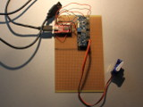
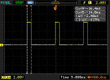
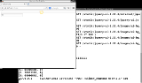

|

Fig.1: Driver board

Fig.2: Pulse width modulation

Fig.3: Web interface
|
Controlling servo motors using the PCA9685 PWM driver via I2C from a Python Flask Webinterface using an FTDI FT232RL in BitBang-Mode
An easy method for controlling servo motors from your computer's USB port
|
|
|
|
What?
|
|
I've adapted the I2C script for reading the compass module (see here for details on I2C and FTDI FT232RL bit-banging), so that I can now use it to talk to a PCA9685 PWM driver IC. This enables me to control pulse width modulated servo motors (motors that can be set to a specific angle), which are connected to the PCA9685, from Python - very easily. From there it's easy to add a Webinterface with sliders that control the motors.
|
|
|
|
When?
|
|
This is what I was originally heading for when I started working on the compass module. I wanted to control servo motors for a four-legged walking robot. Reading the compass module is easier than controlling the PWM driver, so I decided to do that first and then use the functioning I2C code and adapt it for the pwm controller.
|
|
|
|
Why?
|
|
Being able to easily control servo motors from Python will be very useful. I have a number of projects planned that use servo motors. One of which is a walking robot that will use servo motors to control its legs. Another idea is to track a moving object by panning and tilting a webcam.
|
|
Background?
FTDI, bit-banging and I2C
(see here for details on I2C and FTDI FT232RL bit-banging),
Servo motors
A servo motor is a DC motor with added mechanics and electronics. The added mechanics are a gear box, for increasing the motors torque, and a limit, to constrain the range it can turn. Typical servo motors can turn within a range of +90 to -90 degrees. The added electronics are a potentiometer, which is connected to the motor. So when the motor rotates, so does the potentiometer. By measuring the potentiometer one can determine the angle at which the motor has currently rotated. An additional circuit inside the servo receives a "command" to what angle it should turn and it then rotates the motor until the potentiometer read-out matches that angle.
PWM modulation
Most servos are PWM modulated. What this means is that this "command" to the servo's circuit board is a pulse-width modulated (PWM) signal. A PWM signal is a digital signal which is normally on logic 0. It then ramps up to 1 for a specified amount of time and then back down to 0 (see Fig.2). The specified amount is the pulse-width. This pulse-width has to be set accordingly to the desired angle we want the motor to rotate to.
PWM driver
Now, I can't accuratly control the width of a signal from the FTDI FT232RL in BitBang-mode, because it is far too slow and inaccurate. But I can make it speak I2C in software - just like I did for the compass module. There are PWM driver integrated circuits which receive commands via I2C and handle the pulse-width-modulation themselves.
So all I have to do is tell this chip, via I2C, which pulse-width I want it to modulate. This will enable me to control the servo motor.
How?
Connecting it
The connection between the FTDI FT232RL break-out board and the PCA9685 break-out board is as you would expect: Vcc and V+ go to the FTDI's Vcc. Ground goes to Ground. And the V+ and GND in the center of the PCA9685 break-out are hooked up in the same way - V+ goes to the FTDI's Vcc and Ground to its Ground. I am in fact running the servos off of the usb ports power.
This works for me using either one TowardPro MG996R or one TowerPro SG90 servo - both don't need too much power. But hooking up 16 of those MG996Rs will definitely cause trouble. But USB-Ports are in fact protected - this depends on your computer's mainboard. Generally, you do need to go to great lengths to fry them, but they will eventually shut down.
The PCA9685's I2C SCL line goes to TXD on the FT232RL and SDA goes to RXD. Additional 1,8k pull-ups go from RXD and TXD to Vcc.
Servo Library
I've adopted the I2C code I wrote for the compass module in order to speak to the PCA9685. This code is used by a web interface, so it has to be thread-safe. This is because the webserver will start a new thread for each request and so access to variables which are outside of the functions is not guaranteed.
The easiest way to make the code thread-safe is to make it free of "side-effects". That is to remove all variables that are outside of functions and pass everything the functions needs to the function via parameters. By doing this the code will have no "state" (or memory) of its own and every function call will work no matter in what order or what else is happening.
Of course accessing the FTDI chip locks the USB device associated with it. So we need to make sure we grab and then release it in every call. Other calls which try to grab the device, when another thread already has it, will fail silently. But calling the function again will work as soon as the previous thread has finished - so this is okay for now.
See more
| # [...]
from pylibftdi import BitBangDevice
# [...]
def init(chipAddresse, freq):
# [...]
def move(chipAddresse, port, duration):
# [...]
|
Hide
1
2
3
4
5
6
7
8
9
10
11
12
13
14
15
16
17
18
19
20
21
22
23
24
25
26
27
28
29
30
31
32
33
34
35
36
37
38
39
40
41
42
43
44
45
46
47
48
49
50
51
52
53
54
55
56
57
58
59
60
61
62
63
64
65
66
67
68
69
70
71
72
73
74
75
76
77
78
79
80
81
82
83
84
85
86
87
88
89
90
91
92
93
94
95
96
97
98
99
100
101
102
103
104
105
106
107
108
109
110
111
112
113
114
115
116
117
118
119
120
121
122
123
124
125
126
127
128
129
130
131
132
133
134
135
136
137
138
139
140
141
142
143
144
145
146
147
148
149
150
151
152
153
154
155
156
157
158
159
160
161
162
163
164
165
166
167
168
169
170
171
172
173
174
175
176
177
178
179
180
181
182
183
184
185
186
187
188
189
190
191
192
193
194
195
196
197
198
199
200
201
202
203
204
205
206
207
208
209
210
211
212
213
214
215
216
217
218
219 | # D.Salzner 2015-04-05-So
from pylibftdi import BitBangDevice
import time
import sys
import math
debug = 1
PIN_0_TXD = 0
PIN_1_RXD = 1
PIN_I2C_SCL = PIN_0_TXD
PIN_I2C_SDA = PIN_1_RXD
# --- gpio ---
def pout(bb, pin, wert):
if wert == 1:
bb.port = bb.port | (1 << pin)
else:
bb.port = bb.port & ~(1 << pin)
#time.sleep(0.001)
def pin(bb, pin):
if bb.port & (1<<pin):
return 1
else:
return 0
def pinit(bb):
bb.direction = bb.direction | (1 << PIN_I2C_SCL) # Clock aus Ausgang
bb.direction = bb.direction | (1 << PIN_I2C_SDA) # SDA als Ausgang
# --- i2c ---
def i2cstart(bb):
pout(bb, PIN_I2C_SDA, 1)
pout(bb, PIN_I2C_SCL, 1)
pout(bb, PIN_I2C_SDA, 0)
pout(bb, PIN_I2C_SCL, 0)
def i2cstop(bb):
pout(bb, PIN_I2C_SDA, 0)
pout(bb, PIN_I2C_SCL, 1)
pout(bb, PIN_I2C_SDA, 1)
def i2cwriteH(bb, wert):
if debug == 1:
sys.stdout.write("[S: ")
for i in range(8): # Rueckwaerts rausshiften
if(wert & 0x80):
pout(bb, PIN_I2C_SDA, 1)
if debug == 1:
sys.stdout.write("1")
else:
pout(bb, PIN_I2C_SDA, 0)
if debug == 1:
sys.stdout.write("0")
pout(bb, PIN_I2C_SCL, 1)
pout(bb, PIN_I2C_SCL, 0)
wert = wert << 1
pout(bb, PIN_I2C_SDA, 1)
bb.direction = bb.direction & ~(1 << PIN_I2C_SDA) # als Eingang
pout(bb, PIN_I2C_SCL, 1)
ack = pin(bb, PIN_I2C_SDA)
if debug == 1:
sys.stdout.write(", " + str(ack)) # ist 0, wenn der Slave acknowledged. sonst 1 - da wir den Port auf 1 gelassen haben.
pout(bb, PIN_I2C_SCL, 0)
bb.direction = bb.direction | (1 << PIN_I2C_SDA) # wieder als Ausgang
if debug == 1:
sys.stdout.write("]\n")
#time.sleep(0.01) # bisschen entzerren, damit am Oszi leichter lesbar
def i2cwrite(bb, addresse, register, wert):
# Startsequenz
i2cstart(bb)
# Chip ansprechen und Write vorbereiten
ersten8 = addresse
ersten8 = ersten8 & ~(1 << 0) # read/write auf 0, zum schreiben
i2cwriteH(bb, ersten8) # erwarte danach 0 als ack
# Modus Register auswaehlen
i2cwriteH(bb, register) # erwarte danach 0 als ack
# und kontinuierliche Messung reinschreiben
i2cwriteH(bb, wert) # erwarte danach 0 als ack
# Abschliessen
i2cstop(bb)
def i2cread(bb, addresse, register):
i2cstart(bb)
# Chip ansprechen und Write vorbereiten
ersten8 = addresse
ersten8 = ersten8 & ~(1 << 0) # read/write auf 0, zum schreiben
i2cwriteH(bb, ersten8) # erwarte danach 0 als ack
# Register anwaehlen
i2cwriteH(bb, register) # erwarte danach 0 als ack
i2cstart(bb)
# und jetzt lesen vorbereiten
ersten8 = addresse
ersten8 = ersten8 | (1 << 0) # read/write auf 1, zum lesen
i2cwriteH(bb, ersten8) # erwarte danach 0 als ack
if debug == 1:
sys.stdout.write("[L: ")
bb.direction = bb.direction & ~(1 << PIN_I2C_SDA) # als Eingang
wert = 0
for i in range(8): # eigl 8 - danach kommen die naechsten 8 des Wertes
pout(bb, PIN_I2C_SCL, 1)
wert <<= 1
if(pin(bb, PIN_I2C_SDA) == 1):
if debug == 1:
sys.stdout.write("1")
wert |= 0x1
else:
if debug == 1:
sys.stdout.write("0")
pout(bb, PIN_I2C_SCL, 0)
if debug == 1:
sys.stdout.write("]\n")
bb.direction = bb.direction | (1 << PIN_I2C_SDA) # wieder als Ausgang
pout(bb, PIN_I2C_SDA, 0) # ich muss acknowledgen...
pout(bb, PIN_I2C_SCL, 1)
pout(bb, PIN_I2C_SCL, 0)
bb.direction = bb.direction & ~(1 << PIN_I2C_SDA) # als Eingang
# Abschliessen
i2cstop(bb)
return wert
# --- pca9685 - hier viel von Adafruit Bibliothek genommen ---
PCA9685_SUBADR1 = 0x2
PCA9685_SUBADR2 = 0x3
PCA9685_SUBADR3 = 0x4
PCA9685_MODE1 = 0x0
PCA9685_PRESCALE = 0xFE
LED0_ON_L = 0x6
LED0_ON_H = 0x7
LED0_OFF_L = 0x8
LED0_OFF_H = 0x9
ALLLED_ON_L = 0xFA
ALLLED_ON_H = 0xFB
ALLLED_OFF_L = 0xFC
ALLLED_OFF_H = 0xFD
# --- Code ---
def init(chipAddresse, freq):
bb = BitBangDevice()
pinit(bb)
freq *= 0.9;
prescaleval = 25000000;
prescaleval /= 4096;
prescaleval /= freq;
prescaleval -= 1;
prescale = int(math.floor(prescaleval + 0.5))
i2cwrite(bb, chipAddresse, PCA9685_MODE1, 0x10);
i2cwrite(bb, chipAddresse, PCA9685_PRESCALE, prescale);
i2cwrite(bb, chipAddresse, PCA9685_MODE1, 0x00);
i2cwrite(bb, chipAddresse, PCA9685_MODE1, 0xA1);
bb.close()
def move(chipAddresse, port, duration):
bb = BitBangDevice()
pinit(bb)
# Startsequenz
i2cstart(bb)
# Chip ansprechen und Write vorbereiten
ersten8 = chipAddresse
ersten8 = ersten8 & ~(1 << 0) # read/write auf 0, zum schreiben
i2cwriteH(bb, ersten8) # erwarte danach 0 als ack
# Modus Register auswaehlen
i2cwriteH(bb, LED0_ON_L+(4*port)) # erwarte danach 0 als ack
i2cwriteH(bb, 0b00000000)
i2cwriteH(bb, 0b00000000)
# und kontinuierliche Messung reinschreiben
i2cwriteH(bb, duration) # erwarte danach 0 als ack
i2cwriteH(bb, duration>>8)
# Abschliessen
i2cstop(bb)
bb.close()
|
Hide
The code can easily be tested in the Python interactive shell by issuing "python" in the terminal/command prompt (Linux: may need root privilidges to access the USB device) and enter these commands:
| import servo
servo_chipAddresse = 0b10000000
servo_freq = 60
servo_port = 0
servo.init(servo_chipAddresse, servo_freq)
|
This is also how I found out what values I need for my servos - by changing the duration and measuring the PWM signal on the oscilloscope to match the datasheet of the motors - but the values differ. Especially on the cheap SG-90 servos (these can even break themselves, if they attempt to rotate too far).
servo.move(servo_chipAddresse, servo_port, 180) # TowardPro MG996R min - 600us
servo.move(servo_chipAddresse, servo_port, 470) # TowardPro MG996R max - 1800us
servo.move(servo_chipAddresse, servo_port, 130) # TowerPro SG-90 min - 520us
servo.move(servo_chipAddresse, servo_port, 650) # TowerPro SG-90 max - 2500us |
Web-Interface
I stumbled across Python Flask the other day and found that it is an excellent way to quickly build user interfaces. It starts a small webserver and loads up HTML templates from a subdirectory, which are sent to the web browser, when it accesses the server. Inside these templates is code to communicate back with Python. So you can have a button on the website that runs Python code in the background once its clicked on - perfect for my needs.
This also gives me the ability to drop the code - as is - onto an embedded network-enabled computer and be able to control it from outside. And I don't need to write seperate client and server-side code. Plus I can open it from my smartphone.
Big-banging: No microcontroller code. Flask: No client/server code and no custom protocols. All in all: No nothing - just one short Python script (and one for the servos).
Python Flask requires a special folder structure:
app
app/main.py # code for Flask, loads the webserver
app/servo.py # code for controlling the servos
app/static
app/static/jquery-ui-1.11.4 # JQuery library. This is what I use for user interface elementes such as a slider
app/templates
app/templates/steuerung.html # the template for the servo control webpage
|
The file servo.py is the code from above.
This is main.py:
1
2
3
4
5
6
7
8
9
10
11
12
13
14
15
16
17
18
19
20
21
22
23
24
25
26
27 | # D.Salzner 2015-04-05-So
from flask import Flask, render_template, request, url_for
app = Flask(__name__)
import servo
servo_chipAddresse = 0b10000000
servo_freq = 60
servo_port = 0
servo_max = 650
servo_min = 130
@app.route('/')
def steuerung():
servo.init(servo_chipAddresse, servo_freq)
return render_template('steuerung.html')
@app.route('/slider_changed', methods=['POST'])
def slider_changed():
print "[] slider_changed"
wert = request.values.get("wert")
setzen = ((((servo_max - servo_min) / 180.0) * float(wert)) + servo_min)
servo.move(servo_chipAddresse, servo_port, int(setzen))
if __name__ == '__main__':
app.run()
|
I won't go into too much detail on how it works (out of scope), but its fairly basic.
Once the web browser accesses the webpage Flask will initialize the servos and send the html template back.
Within this template is a slider, which automatically initiates an HTTP Post request to the server. This is caught in the "slider_changed" function. Then the servos are moved accordingly.
Now the slider goes from 0 to 180 degrees, so I need to adapt the range to that of the servos, but that's really all there is to it.
The template looks like this:
1
2
3
4
5
6
7
8
9
10
11
12
13
14
15
16
17
18
19
20
21
22
23
24
25
26
27 | <html>
<head>
<title>Steuerung</title>
<link rel="stylesheet" href="static/jquery-ui-1.11.4/jquery-ui.css">
<script src="static/jquery-ui-1.11.4/external/jquery/jquery.js"></script>
<script src="static/jquery-ui-1.11.4/jquery-ui.js"></script>
<script type=text/javascript>
$(function() {
$( "#slider" ).slider({
min: 0,
max: 180,
step: 1,
change: function(event, ui) {
//slide: function(event, ui) {
//alert("slider triggered");
$("#textfield").val(ui.value);
$.post("/slider_changed", {wert: ui.value} );
}
});
});
</script>
</head>
<body>
<div id="slider"></div>
<input id="textfield" type="text" value="0"></input>
</body>
</html>
|
(I just syntax highlighted html in html...)
And then I can run this by issuing:
python main.py
It will open a webserver on port 5000, which I can access from my browser under the url http://127.0.0.1:5000/. Moving the slider on that page moves the servo.
Progress?
All is up and running (see Video).
|